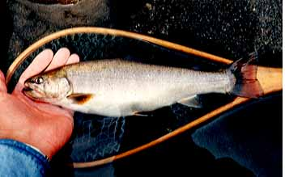
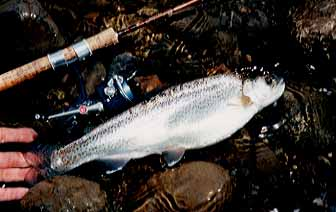
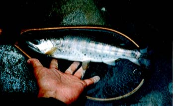

Photo Gallery
Trout in the main stream
Let me show you some trout that still swimming in my memories.

This "Iwana" came out from behind of a rock in the deep water. I thought the fish was not a trout cause I saw the red colour of its body. But I knew it was "Iwana" trout. I got upset. I supposed that the fish had eaten many small fish.

I cast a Hus-Lure in the whitewater of discharge, and made few reeling, I got a hard attack from the deep water. Suddenly the fish made a few incredible jumping. What a jump! I shouted. Then the fish ran toward upstream, and my reel screamed. Finally, I landed the fish. It was a potbelly rainbow trout.

In the summer of 1998, I get the fish at a mainstream after a hard rain. It rose, I made a strike, but the hook was on its body fin. Cause the fish fought hardly with unbelievable power. This "Yamame" bent my #3 fly rod like a full moon. It was 30cm, and was my trophy of '98.
Photo Gallery Contents
Home